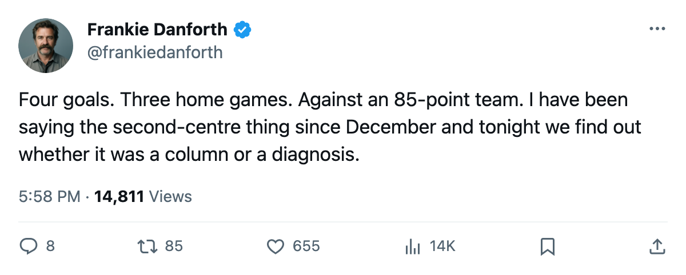
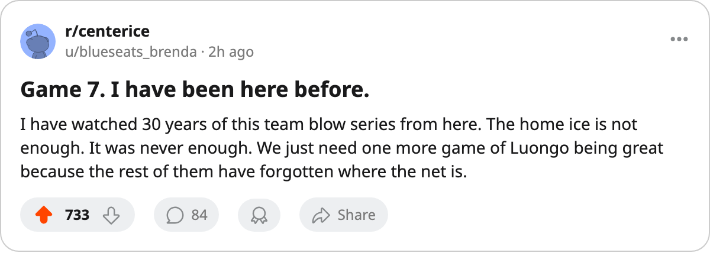

TOR
TOR PIT
PIT WSH
WSHDANFORTH: Code Orange, 4 goals in 3 home games, and a Game 7 I cannot explain away
The 133-point team needs a win tonight against an 85-point club to keep its season alive on its own ice.
 Frankie DanforthColumnist · Queen City Telegram
Frankie DanforthColumnist · Queen City Telegram
I said Orange after 19 shots. The team answered with 7 goals in 2. I said Orange after the ankle. They lost 0-2 and 2-3 in overtime. Now they are in a Game 7 against a Pittsburgh team with 85 points, and the number I cannot get past is 4 goals in 3 home games.
Four. In 3 tries. At the Air Canada Centre. Where this club went 33-8 all season.
The Gaborik hole I keep pointing at
You do not replace 55 goals and 44 assists in a series. You do not replace 10 points in 8 playoff games with a system adjustment.  Marian Gaborik99 is out until 2005-06-02 and the team has 2 goals in 2 games without him. I said it was the 0 I could not explain. Now I add the 2-3 in overtime. Two losses in which the top line scored everything.
Marian Gaborik99 is out until 2005-06-02 and the team has 2 goals in 2 games without him. I said it was the 0 I could not explain. Now I add the 2-3 in overtime. Two losses in which the top line scored everything.
 Mats Sundin92 has 8 points in 11 games.
Mats Sundin92 has 8 points in 11 games.  Gary Roberts87 has 11.
Gary Roberts87 has 11.  Alexander Mogilny89 has 6. Those three have scored the playoff goals. Everyone else combined has 4. That is not a coaching problem. That is a roster problem wearing a coaching problem's face.
Alexander Mogilny89 has 6. Those three have scored the playoff goals. Everyone else combined has 4. That is not a coaching problem. That is a roster problem wearing a coaching problem's face.
The second-centre question in May
Petr Chlup87 is 19 years old, 59 points in 71 games, and carries a +0 on the Development Index (he is not on the Bureau's riser list).  Brad Richards89 is +4 and has no goal in the spring.
Brad Richards89 is +4 and has no goal in the spring.  Rick Nash85 is +5 and has no goal in the spring. The Bureau has them as the best form players on this club and they have been invisible since Game 1.
Rick Nash85 is +5 and has no goal in the spring. The Bureau has them as the best form players on this club and they have been invisible since Game 1.
I wrote about this in March. The 1C slot carries Sundin alone and when the 98-overall right wing goes down, the whole machine stops because there is no one to feed the wings when Sundin is on the bench.
Code Orange
Not Red. They are at home. They are 33-8 at home. They have a 3-0 series lead they blew and a Game 7 in front of a building that watched this team lose 0-2 on Saturday and 2-3 in overtime on Monday. I trust the home ice.
I trust Luongo. 7-4, 1.99, .945. He has been the best player on this club in the spring. That is not a compliment to the team.
Tonight is not a test of whether this club is good enough. We know it is. Tonight is a test of whether four goals in three home games was the floor or the ceiling.
If it is the ceiling, the Conference Final against Washington is not a series. It is an exit.

